01Result
Same 10 EgoDex episodes, three pipeline variants. Coverage = share of 3D points with an instance label.
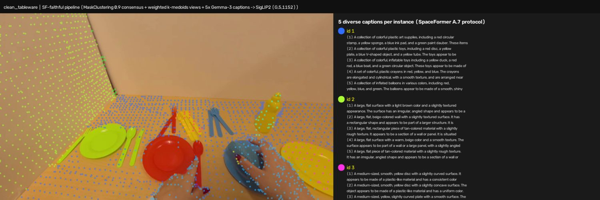
02The pipeline & parity audit
Ego RGB → VGGT-Omega depth (metric via GT-hand scale) → flow-tracked 3D points → SAM2 instance masks → per-instance caption → SigLIP2 1152-d target. The audit re-implements the original spec component by component.
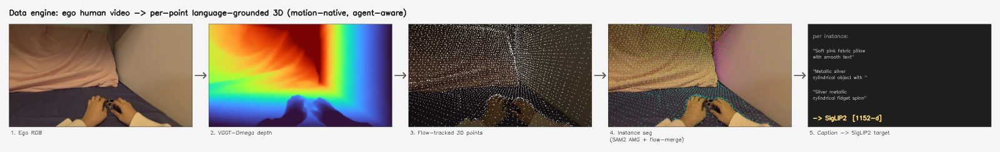
| Component | SpaceFormer original | This audit | Parity |
|---|---|---|---|
| 2D masker | SAM2, per-view, class-agnostic (params undisclosed) | SAM2 AMG hiera_large, pps 32 | match |
| Scene points | RGB-D scan reconstruction | union of clip anchor clouds (VGGT depth + GT cam) | ego substitution |
| Clustering | MaskClustering: vis .3 / cont .8 / underseg .3 / consensus .9 / point .5 | same params, ported | match |
| Visibility test | depth-based occlusion | in-frustum only | approximation |
| View selection | weighted k-medoids (time dist, mask-px weights) | same, K=5 | match |
| Captioner | Gemma 3 + A.7 system/user prompt, outline-crop + cutout pairs | gemma-3-12b-it, prompt verbatim | match |
| Captions / instance | 5 (mechanism undisclosed) | 5 via k-medoid view-pair rotation | interpretation |
| Text target | SigLIP2 | siglip2-so400m → (G,5,1152) | match |
| Human embodiment | absent (static indoor scans) | embod-labeled agent instances, VLM bypassed | ego delta |
03What to check in the galleries
Reviewer checklist for the per-instance grids below (tiles sorted by point count, descending). Each tile isolates one instance's points over a dimmed frame, with its caption.
- 1Caption ↔ points agreement (the #1 failure mode).Do the lit points sit ON the thing the caption names? Watch large background instances whose caption names a nearby object instead (e.g. a table captioned as "bowl" — context bleed from the A.7 outline-crop). This was the v0 bbox-hijack; v3/SF reduce but don't eliminate it.
- 2Mask extent / merging.Does one instance swallow two things (floor+hand merged, our known SAM2 failure on charge_device id1)? Conversely, is one surface split into several ids with conflicting captions (over-segmentation)?
- 3Instance count sanity.ours ≈12/ep vs SF-faithful ≈6/ep. Too few = manipulation objects got absorbed into table-scale instances; too many = fragmented surfaces inflating caption noise.
- 4Small-object point support.Sorted order makes this visible: manipulated objects (fork, knife, bottle) often carry only 14–33 points in SF-faithful. Is that enough signal for a per-point encoder target? This is the core coverage argument for our merge.
- 5Caption quality itself.Head noun correct? Attributes (color/material/shape) right? Spatial-relation sentence sensible? Backgrounds described as walls/floors (correct) rather than invented objects (the old v0 hallucination)?
- 6Agent handling.Hand/forearm tiles tagged [agent] with template captions — are actual hand pixels covered by them, and NOT leaking into object instances ("person: hand holding X" head-nouns)?
- 7VITRA-specific.240p source: are captions still grounded (the bowl episodes are a good positive), and how bad is context bleed on background tiles?
04EgoDex — SF-faithful, 10 episodes
MaskClustering (consensus 0.9) + A.7 Gemma-3 ×5 captions. Tiles sorted by #points.
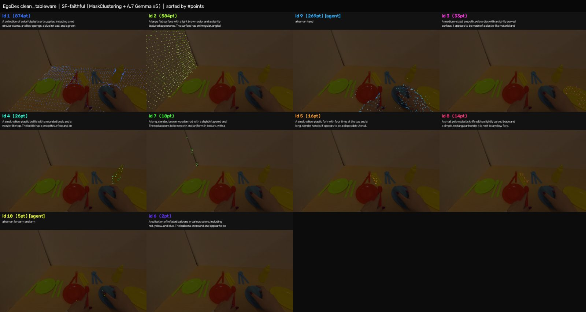
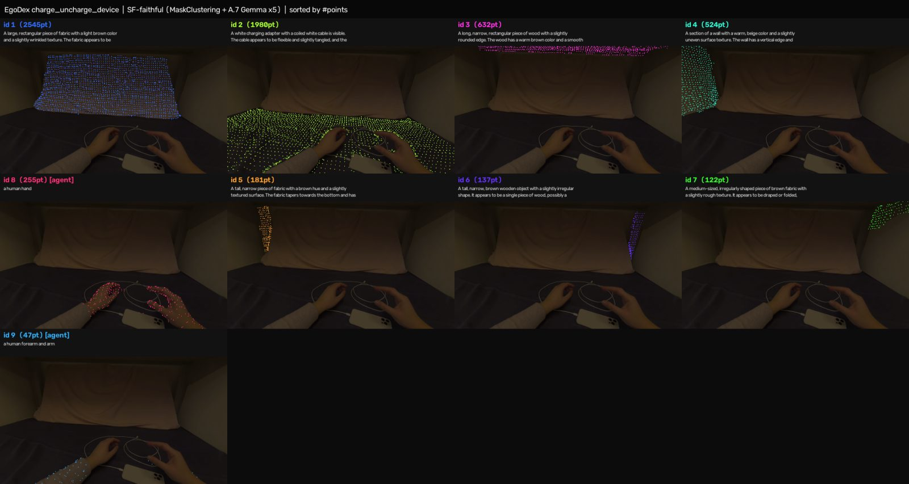
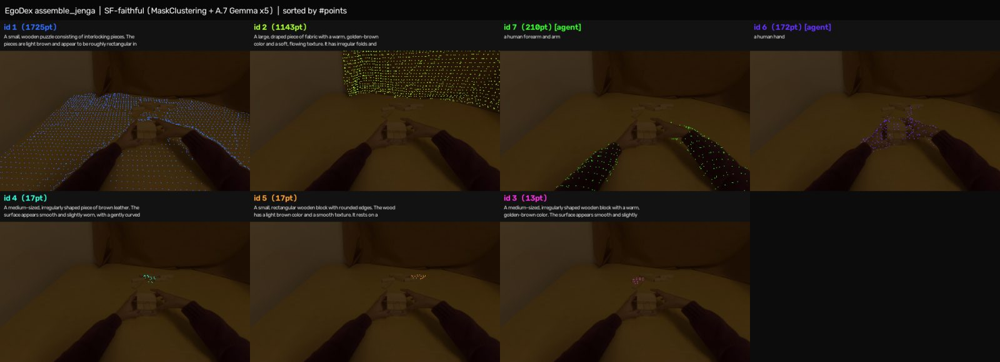
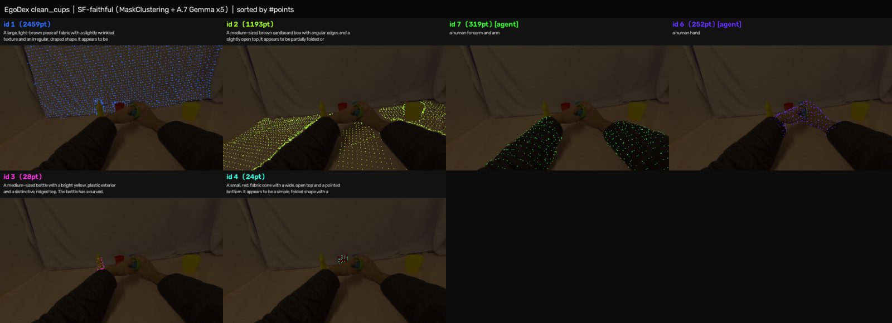
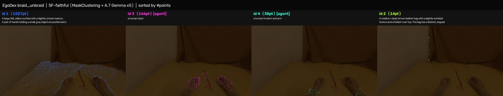
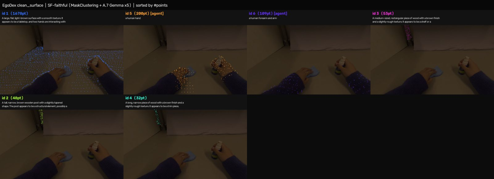
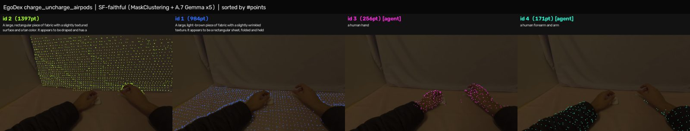
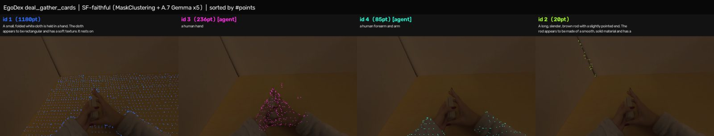
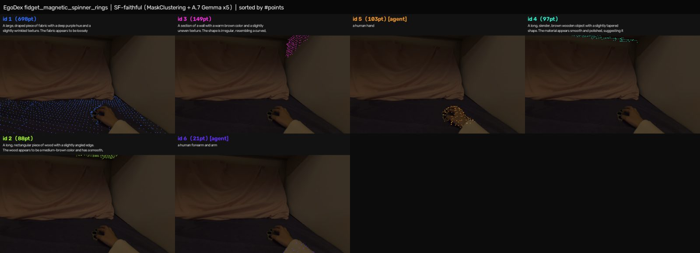
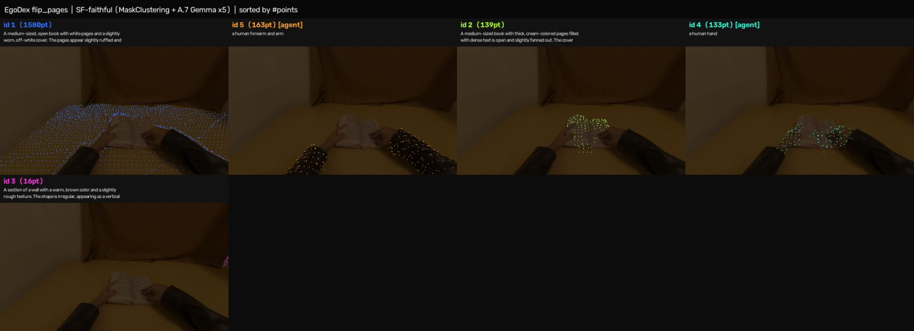
05VITRA — SF-protocol captions, 5 episodes
Our flow-merge + A.7 Gemma-3 captions on 240p something-something v2. Tiles sorted by #points.
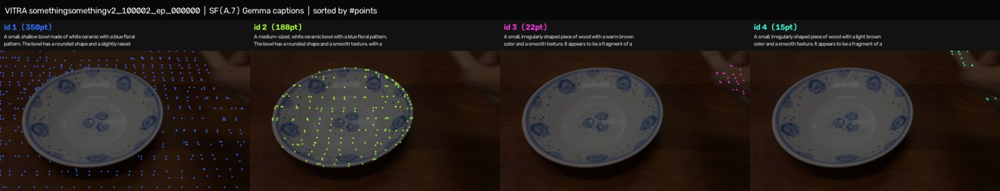
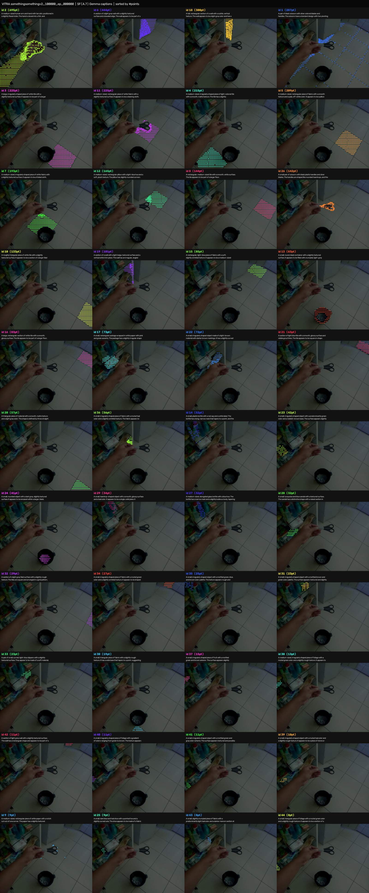
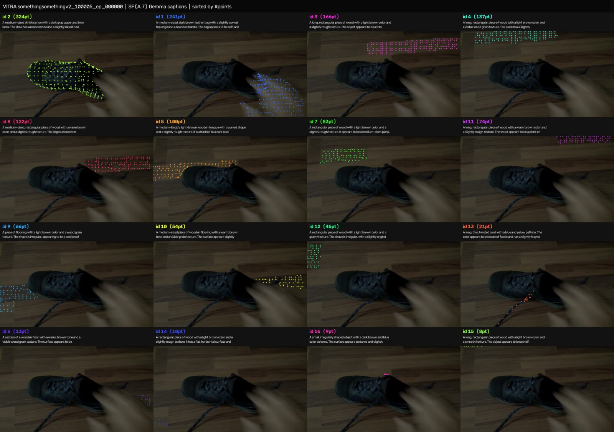
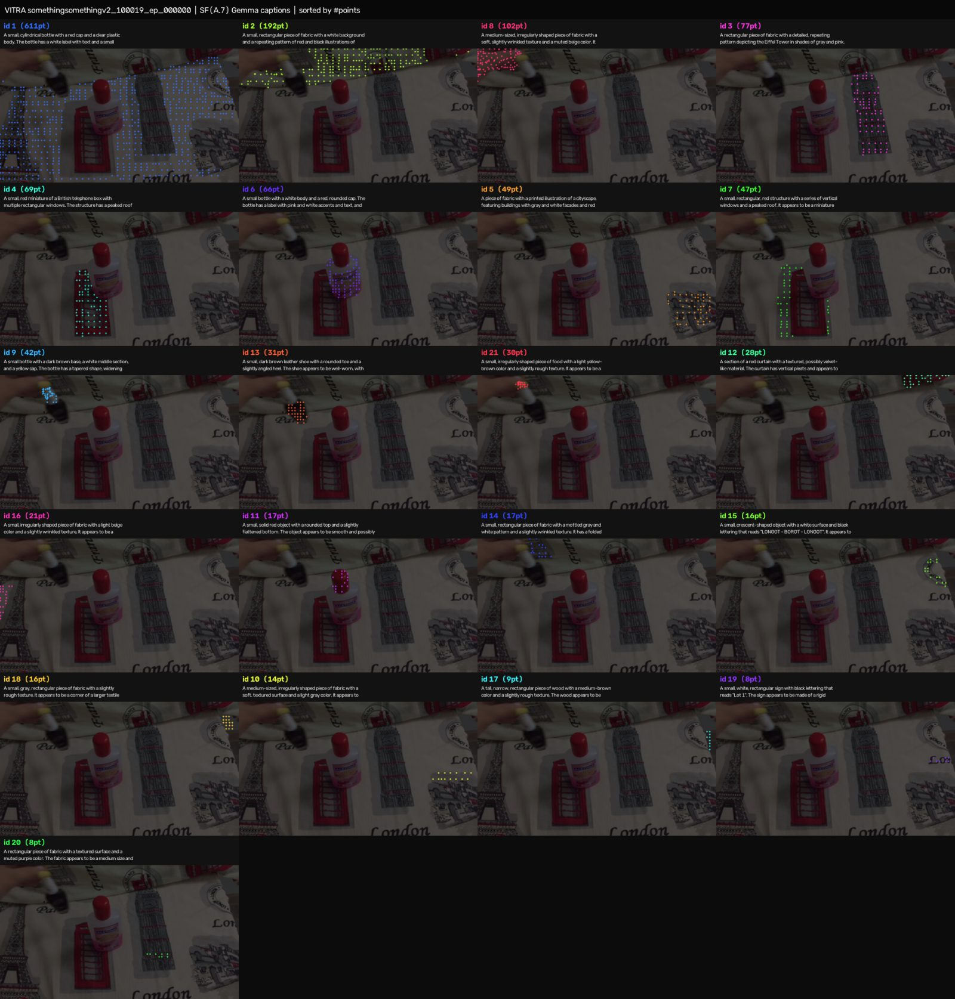
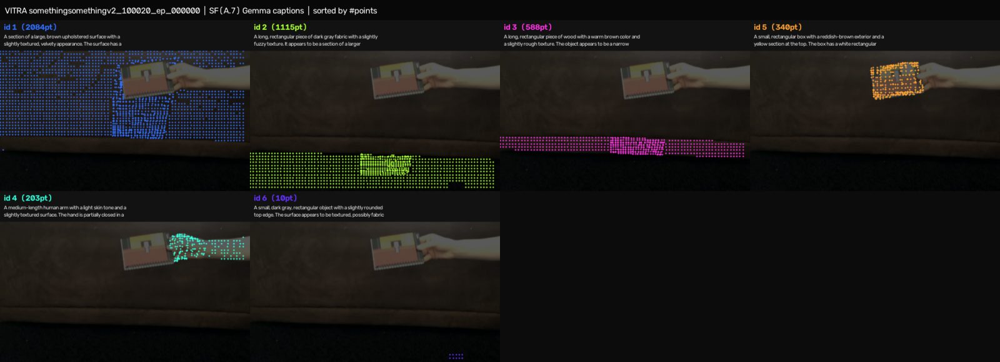
06Diagnosis
Why each component behaves the way it does on ego video.
- ✓Gemma was never the problem — the protocol was.08-20 Gemma trial with our Qwen-tuned montage prompt re-hallucinated background objects. With A.7 verbatim (outline crop + cutout pairs, system+user split), the same model writes walls as walls and objects as rich paragraphs.
- →Static MaskClustering breaks on motion.Its view-consensus assumes a rigid world; moving objects + hand interventions kill consensus, so clusters die (12→6.2 inst/ep) and coverage drops to 57.9%. Small manipulated objects survive with only 14–33 points. Our scene-flow merge keeps point identity through motion — 94.3% at 12.0 inst/ep.
- →Caption-region context bleed persists at a lower rate.A.7's outline crop keeps context for the spatial-relation sentence, so a background instance occasionally describes a nearby foreground object (VITRA id1 "bowl"). Earlier caption history on this axis: v0 bbox-hijack ("earbud case" on floor points) → v1 abstain regressed held objects → v3 masked-crop fixed backgrounds → SF A.7 richest captions, small bleed remains.
- ✓Remaining mask-level errors are SAM2's, not the captioner's.charge_device id1 merges floor+hand into one mask; no prompt fixes a wrong mask. Lever: AMG post-processing (co-planar merge, embod-before-AMG) + gold-GT audit (HOT3D mesh-reprojection as an accuracy ruler).
07Timeline
- 2026-08-13Workstream opened
Scope set with user: comprehensive SpaceFormer-faithful mask+caption+SigLIP2 on EgoDex+VITRA for the PointWAM 3D backbone. Sample → QA → pilot → EgoDex-full campaign (7 parts × 12 shards, keeper cron).
- 2026-08-14Cross-clip merge + VITRA adapter validated
Episode-global instances via 3D-IoU + scene-flow merge (~6× caption cost cut); VITRA flows share the EgoDex contract — one adapter flag.
- 2026-08-19Caption v0 bbox-hijack found and fixed
User spotted background instances captioned as invented objects. Root cause: caption crop was the mask's bounding box, not the mask — a floor's bbox contains a held case. v1 (abstain) regressed held objects; v3 (masked-crop only) fixed backgrounds while keeping objects. The 10-figure set re-captioned same-day.
- 2026-08-20First Gemma-3 trial fails — flagged as protocol suspicion
gemma-3-12b with our Qwen montage prompt re-hallucinated backgrounds; kept Qwen v3 as default pending a faithful-protocol test.
- 2026-08-23Parity audit: faithful pipeline built and run
Paper App. A.6/A.7 + MaskClustering code read in depth; egodex_maskcap_sf.py implements canonical world cloud, point-in-mask matrix, original clustering params, k-medoids views, A.7 Gemma ×5 captions. 10 EgoDex + 5 VITRA demos rendered; coverage numbers above.
- 2026-08-24Per-instance grids (sorted) + this report
All 15 demos re-rendered as point-count-sorted verification grids; reviewer checklist added. Campaign at 141k/324k EgoDex episodes (43.6%).
08Next
- ·Decision: switch campaign captioner to hybrid (our merge + A.7 Gemma).Costs: paragraph captions are slower; 5 vs 1–2 captions/instance trade-off. Awaiting user verdict on the galleries above.
- ·HOT3D + HOI4D onboarding (user action required).HOT3D presigned URLs expired — re-accept license at projectaria.com, then datasets_human/hot3d/download_hot3d_subset.sh automates a 5-seq subset. HOI4D OneDrive links are browser-gated. Both documented in datasets_human/SETUP.md.
- ·Mask-level fixes.Embod-before-AMG, co-planar surface merge, tiny-instance filter; HOT3D mesh-GT as a quantitative label-accuracy ruler.
- ·EgoDex campaign continues (v3 captions).141k/324k done; task-stratified ordering + 2× extractor speedup proposed for freeze coverage.
09Artifacts & repro
- ·Production pipelinePointWAM/data_prep/egodex_annotation/egodex/egodex_maskcap.py (v3 default · CAPTION_STYLE=sf for A.7)
- ·Faithful pipeline…/egodex_maskcap_sf.py · run_fig10_sf_faithful.sbatch (job 122958)
- ·Demos + gridsmaskcap_pilot/ppt_deliverables/sf_faithful/{,grids/} · sidecars: recap_demo/fig10_sidecars_{v3,sf_gemma,sf_faithful}, vitra5_sf_gemma
- ·Campaign outputmaskcap_pilot/egodex{,_part2,_part3}/ · keeper cron maskcap_egodex
- ·Position docmaskcap_pilot/human_data_engine.html (claude artifact, Parity Audit section)